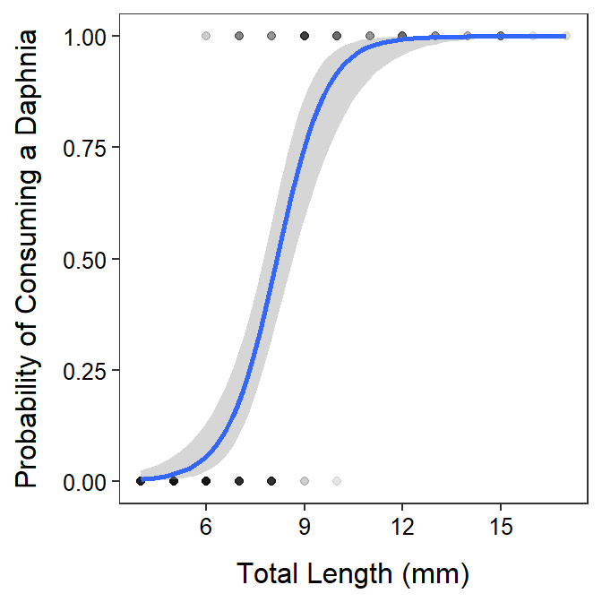

> predProb <- function(x,alpha,beta) exp(alpha+beta*x)/(1+exp(alpha+beta*x))
> predX <- function(p,alpha,beta) (log(p/(1-p))-alpha)/beta
> Ruffe <- read.csv("https://raw.githubusercontent.com/droglenc/NCData/master/RuffeLarvalDiet.csv")
> Ruffe <- filter(Ruffe,loc=="Allouez")
> Ruffe$daph01 <- ifelse(Ruffe$o.daph=="Y",1,0)
> glm.Ruffe <- glm(daph01~len,data=Ruffe,family=binomial)
> anova(glm.Ruffe,test="LRT")Analysis of Deviance Table
Model: binomial, link: logit
Response: daph01
Terms added sequentially (first to last)
Df Deviance Resid. Df Resid. Dev Pr(>Chi)
NULL 163 218.467
len 1 130.81 162 87.659 < 2.2e-16> boot.Ruffe <- car::Boot(glm.Ruffe)
> cbind(Est=coef(glm.Ruffe),confint(boot.Ruffe,type="perc")) Est 2.5 % 97.5 %
(Intercept) -10.711628 -15.485570 -8.319108
len 1.311943 1.020951 1.897401> nd <- data.frame(len=6)
> ( lodds6 <- predict(glm.Ruffe,newdata=nd) ) 1
-2.83997 > exp(lodds6) 1
0.05842739 > ( prob6 <- predict(glm.Ruffe,newdata=nd,type="response") ) 1
0.05520208 > prob6.boot <- predProb(6,boot.Ruffe$t[,1],boot.Ruffe$t[,2])
> ( prob6.ci <- quantile(prob6.boot,probs=c(0.025,0.975),type=1) ) 2.5% 97.5%
0.01380019 0.10900300 > x50.boot <- predX(0.5,boot.Ruffe$t[,1],boot.Ruffe$t[,2])
> ( x50.ci <- quantile(x50.boot,probs=c(0.025,0.975),type=1) ) 2.5% 97.5%
7.768726 8.582608 > x90.boot <- predX(0.9,boot.Ruffe$t[,1],boot.Ruffe$t[,2])
> ( x90.ci <- quantile(x90.boot,probs=c(0.025,0.975),type=1) ) 2.5% 97.5%
9.159108 10.536225 > ggplot(data=Ruffe,mapping=aes(x=len,y=daph01)) +
geom_point(alpha=0.1) +
geom_smooth(method="glm",method.args=list(family=binomial)) +
labs(x="Total Length (mm)",y="Probability of Consuming a Daphnia") +
theme_NCStats()